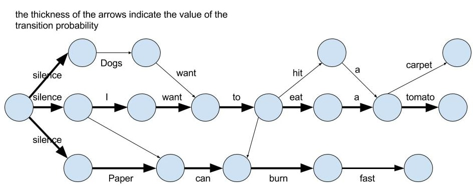
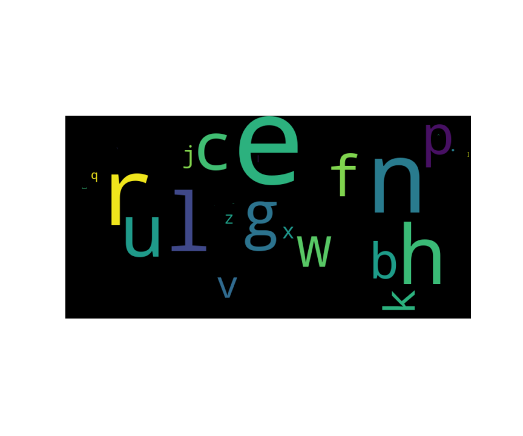
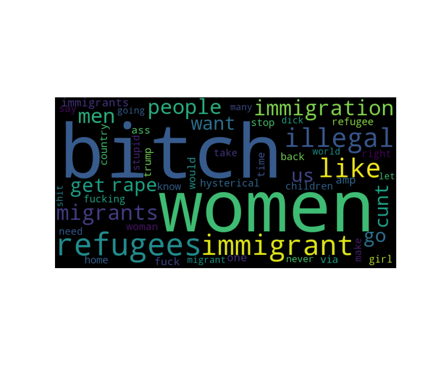
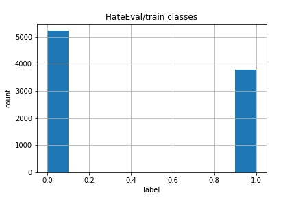

Word-Level vs. Character-Level N-gram Language Models
The most intuitive language model there is: count how often words (or characters) follow each other. Train one per class, and the model that finds a post more likely labels it. A fair comparison of unigram and bigram models at word and character level.
- Language modelling
- Natural Language Processing course
- University of Tehran · 2021
- Python · NLTK

Try a class-conditional n-gram model
Two tiny language models, one per class
Runs in your browserIllustration only: each class model is trained on a handful of toy sentences (shown below), not the project's dataset. Type a sentence and switch model types to see how the scores change.
Toy training sentences
Each token is coloured by which class model gives it higher probability (blue: polite, orange: rude); hover a token for both probabilities. The decision is the class with the higher total log-probability. Notice how the bigram model punishes word pairs it never saw, and how character level still scores misspelled or unseen words.
Results on the real data
Word-level models memorise. The word bigram is nearly perfect on training data (0.98 accuracy) and falls to 0.57 on test: most test word pairs never appeared in training, so smoothing gives them all the same tiny probability.
Character-level models generalise. Their train–test gap is small, and the character bigram is the best model on the test split (0.648 accuracy, 0.640 macro-F1). Characters are shared across words, so new words still get informative scores.


